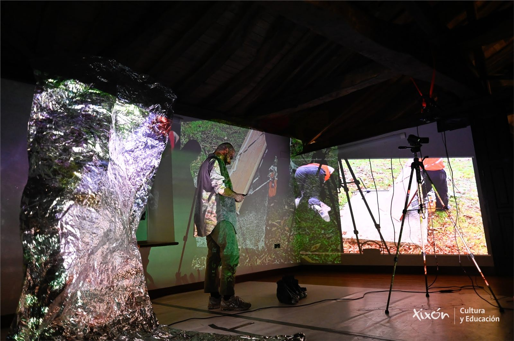

loading sampling_application...
archive -> body -> image -> archive -> body
body online
sampling
SAMPLING / METALAB
FR
NL
EN
READING MODE
PERFORMANCE MODE
SHUFFLE

C:/SAMPLING/METALAB_APPLICATION
archive body image archive body
body-screen
ida y vuelta dances
zapateado del breaking
camera-body
Brussels / Forest
VIDEO SIGNAL
EDITAR
GUARDAR
EXPORTAR
IMPORTAR
RESTAURAR
VISTA